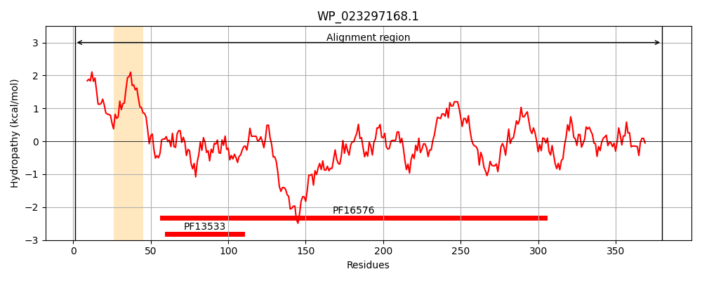
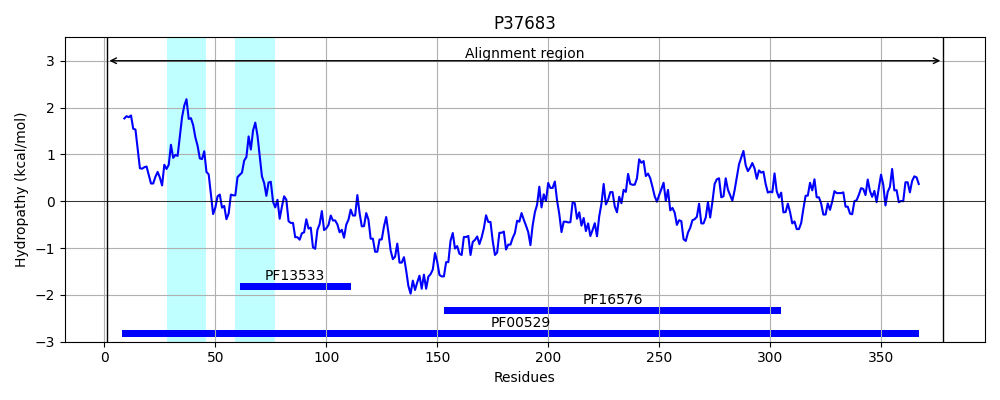
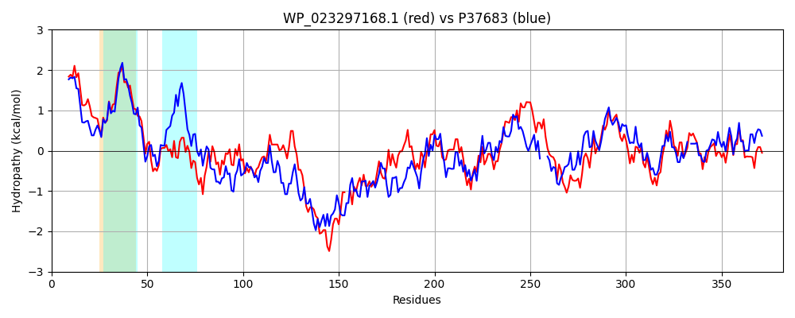

Hit Accession: P37683
Hit TCID: 8.A.1.1.4
Hit Description: gnl|BL_ORD_ID|10133 gnl|TC-DB|P37683|8.A.1.1.4 Inner membrane protein yiaV OS=Escherichia coli (strain K12) GN=yiaV PE=1 SV=1
Mach Len: 382
e:0.000000
Query TMS Count : 1
Hit TMS Count: 2
TMS-Overlap Score: 0.900000
Predicted Substrates:None
BLAST Alignment:
Score: 783 , Bit scores: 306 bits, E-value: 5.3e-102, Alignment length: 382, Percentage identity: 43
Query: 1 METLMLLTYAALCIVVFKVFRIPLNKWTVPTAVLGGIALIGAVIFGMNYNFPYTDVGNQVFRTVPIVSQVRGRVQSVPVKPNQMLHKGDVLFTLDPTPFQAKVDDLQAQIKAASQDALSLNAALSQAQAELSRAVAQRDQSRREYARYREGHAQ--GAFSDQMVDTRLQTWKADEASVSAAQAKVVQARNALESVVKGKNTTVASLLAQLQKAQFQLDNTVVRAPEDGYVSTVGLRPGTMSTALGMIPLMTFVPVEGAASREYVAAFRQNALQRLHKGEPAELMFPAIPGTVFRGEVADVLPAIGESQFQGQGKLLTTDALNTHGRALVVLKVTDPRFAEYALPQGATLEAAVYSDHLKELSLIRKILIRMKSWENYLYLDH 380
M+ L++LTY A +FK+F+IP+NKWT+PTA LGGI ++ +I MNYN PYT + ++P+V QV G V V K N ++ KG+VLF LDPT +QA+VD L A I A +L A L + A +A A RD+ +EY RY G FS++ +D Q + A EASV ++ A+ Q ++ L+S+V G+++ +ASL AQL +A++ L+ T+VRAP DGYV+ V +RPGT + +L + P+M F+P + R+ VA FRQN+L RL G+ AE++F A+PG VF G++A + PA+ +Q G L T + + +++ D ALP G + AVYSDH +S++RK+L+RM SW +YLYLDH
Sbjct: 1 MDLLIILTYVAFAWAMFKIFKIPVNKWTIPTAALGGIFIVSGLILLMNYNHPYTFKAQKAVISIPVVPQVTGVVIEVTDKKNTLIKKGEVLFRLDPTRYQARVDRLMADIVTAEHKQRALGAELDEMAANTQQAKATRDKFAKEYQRYARGSQAKVNPFSERDIDVARQNYLAQEASVKSSAAEQKQIQSQLDSLVLGEHSQIASLKAQLAEAKYNLEQTIVRAPSDGYVTQVLIRPGTYAASLPLRPVMVFIPDQ---KRQIVAQFRQNSLLRLAPGDDAEVVFNALPGKVFSGKLAAISPAVPGGAYQSTGTLQTLNTAPGSDGVIATIEL-DEHTDLSALPDGIYAQVAVYSDHFSHVSVMRKVLLRMTSWVHYLYLDH 378 | Protein Hydropathy Plots: |
|---|
|  |  |
Pairwise Alignment-Hydropathy Plot:
|
|---|
|  |